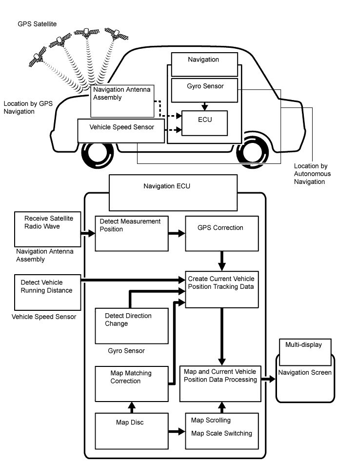
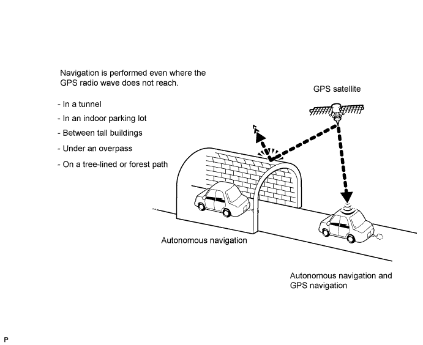
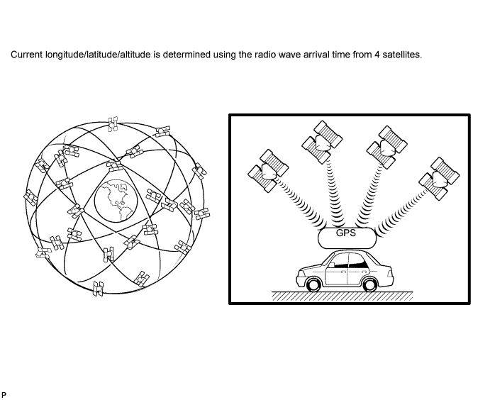
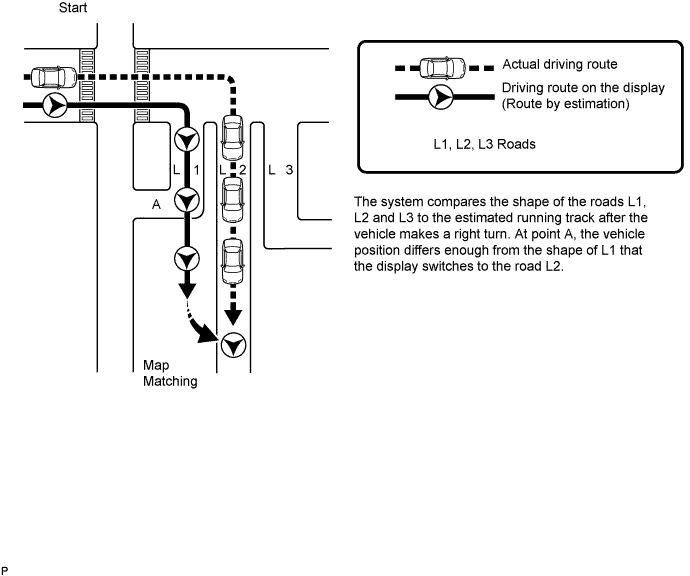
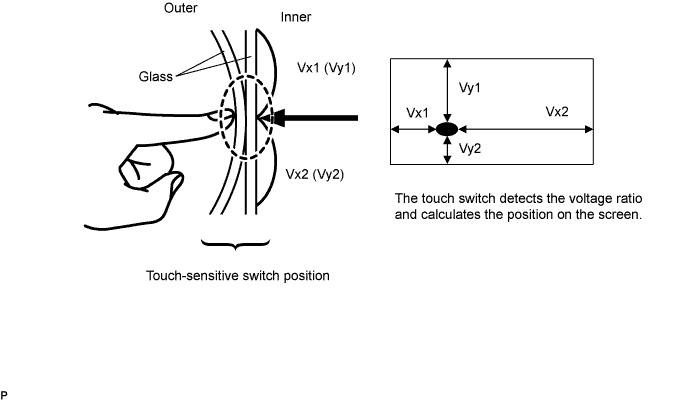
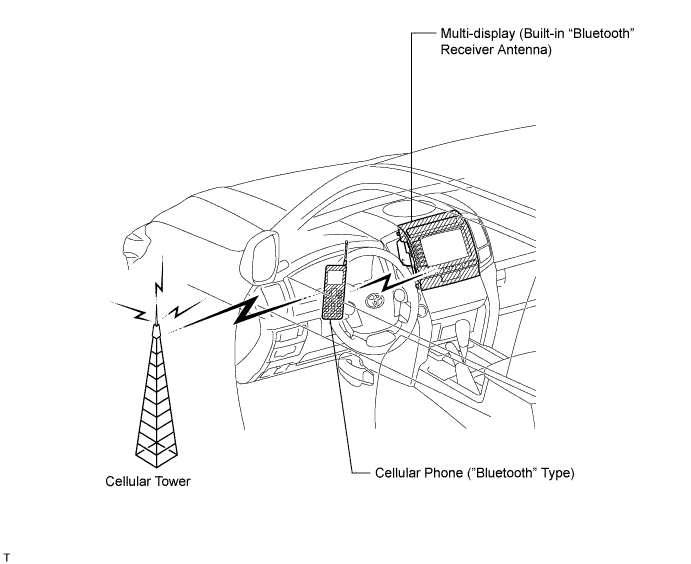
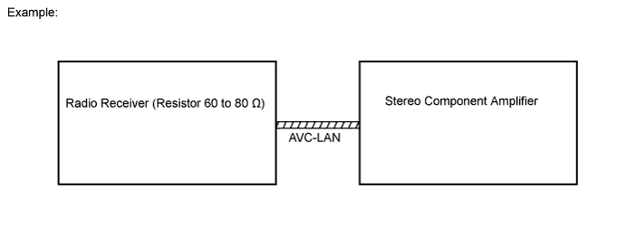

NAVIGATION SYSTEM > SYSTEM DESCRIPTION |
| NAVIGATION SYSTEM OUTLINE |
Vehicle position tracking methods
It is essential that the navigation system correctly tracks the current vehicle position and displays it on the map. There are 2 methods to track the current vehicle position: autonomous (dead reckoning) and GPS* (satellite) navigation. Both navigation methods are used in conjunction with each other.

| Operation | Description |
| Vehicle Position Calculation | The navigation ECU calculates the current vehicle position (direction and current position) using the direction deviation signal from the gyro sensor and running distance signal from the vehicle speed sensor, and creates the driving route. |
| Map Display Processing | The navigation ECU processes the vehicle position data, vehicle running track, and map data from the map disc. |
| Map Matching | The map data from the map disc is compared to the vehicle position and running track data. Then, the vehicle position is matched with the nearest road. |
| GPS Correction | The vehicle position is matched to the position measured by the GPS. Then, the measurement position data from the GPS unit is compared with the vehicle position and running track data. If the position is very different, the GPS measurement position is used. |
| Distance Correction | The running distance signal from the vehicle speed sensor includes error caused by tire wear and slippage between the tires and road surface. Distance correction is performed to account for this. The navigation ECU automatically offsets the running distance signal to make up for the difference between it and the distance data of the map. The offset is automatically updated. |

Autonomous navigation
This method determines the relative vehicle position based on the running track determined by the gyro and vehicle speed sensors located in the navigation ECU.
Gyro sensor
Calculates the direction by detecting angular velocity. It is located in the navigation ECU.
Vehicle speed sensor
Used to calculate the vehicle running distance.
GPS navigation (satellite navigation)
This method detects the absolute vehicle position using radio waves from a GPS satellite*.

| Number of satellites | Measurement | Description |
| 2 or less | Measurement impossible | The vehicle position cannot be obtained because the number of satellites is not enough. |
| 3 | 2-dimensional measurement is possible | The vehicle position is obtained based on current longitude and latitude (this is less precise than 3-dimensional measurement). |
| 4 | 3-dimensional measurement is possible | The vehicle position is obtained based on current longitude, latitude and altitude. |
Map matching
The current driving route is calculated by autonomous navigation (according to the gyro sensor and vehicle speed sensor) and GPS navigation. This information is then compared with possible road shapes from the map data in the map disc and the vehicle position is set onto the most appropriate road.

| MULTI-DISPLAY OUTLINE |
Touch switch
Touch switches are touch-sensitive (interactive) switches operated by touching the screen. When a switch is pressed, the outer glass bends to contact the inner glass at the pressed position. By doing this, the voltage ratio is measured and the pressed position is detected.

| DVD (Digital Versatile Disc) PLAYER OUTLINE (for Navigation Map) |
The navigation ECU uses a laser pickup to read the digital signals recorded on a DVD.
| DVD (Digital Versatile Disc) PLAYER OUTLINE (for DVD Changer Models) |
The DVD player can only play DVD videos that have any of the following marks:
Precaution for use of discs
| "BLUETOOTH" OUTLINE |
"Bluetooth" is a trademark owned by Bluetooth SIG, Inc.
"Bluetooth" is a new wireless connection technology that uses the 2.4 GHz frequency band. This makes it possible to connect a cellular phone ("Bluetooth" capable phone*) to the multi-display ("Bluetooth" system is built-in) through the handsfree function of the cellular phone, even if it is in a pocket or bag. As a result, it is not necessary to use a connector for the cellular phone.

| AVC-LAN DESCRIPTION |
What is AVC-LAN?
AVC-LAN, an abbreviation for "Audio Visual Communication Local Area Network", is a united standard developed by manufacturers in affiliation with Toyota Motor Corporation. This standard pertains to audio and visual signals as well as switch and communication signals.

Purpose:
Recently, car audio systems have rapidly developed and the functions have vastly changed. The conventional car audio system is being integrated with multimedia interfaces similar to those in navigation systems. At the same time, customers are demanding higher quality from their audio systems. This is merely an overview of the standardization background. The specific purposes are as follows:
To solve sound problems, etc. caused by using components of different manufacturers through signal standardization.
To allow each manufacturer to concentrate on developing products they do best. From this, reasonably priced products can be produced.
| COMMUNICATION SYSTEM OUTLINE |
Components of the navigation system communicate with each other via the AVC-LAN.
The radio receiver assembly has enough resistance (60 to 80 Ω) necessary for transmitting communication signals.
If a short circuit or open circuit occurs in the AVC-LAN circuit, communication is interrupted and the navigation system will stop functioning.
| DIAGNOSTIC FUNCTION OUTLINE |
The navigation system has a diagnostic function (the result is indicated on the master unit).
A 3-digit hexadecimal component code (physical address) is allocated to each component on the AVC-LAN. Using this code, the component in the diagnostic function can be displayed.
| DIAGNOSIS DISPLAY DETAILED DESCRIPTION |
SYSTEM CHECK
System Check Mode Screen

| Address No. | Name | Address No. | Name |
| 110 | EMV | 120 | AVX |
| 128 | 1DIN TV | 140 | AVN |
| 144 | G-BOOK | 178 | NAVI |
| 17C | MONET | 190 | AUDIO H/U |
| 1AC | CAMERA-C | 1B0 | Rr-TV |
| 1C0 | Rr-CONT | 19D | BT-HF |
| 1C4 | PANEL | 1C6 | G/W |
| 1C8 | FM-M-LCD | 1D8 | CONT-SW |
| 1EC | Body | 118 | EMVN |
| 1F1 | XM | 1F2 | SIRIUS |
| 230 | TV-TUNER | 240 | CD-CH2 |
| 250 | DVD-CH | 280 | CAMERA |
| 360 | CD-CH1 | 3A0 | MD-CH |
| 17D | TEL | 440 | DSP-AMP |
| 530 | ETC | 1F6 | RSE |
| 1A0 | DVD-P | 1D6 | CLOCK |
| 238 | DTV | 480 | AMP |
| Result | Meaning | Action |
| OK | Device did not respond with DTC (excluding communication DTCs from AVC-LAN). | - |
| EXCH | Device responds with "replace" type DTC. | Look up DTC in "Unit Check Mode" and replace device. |
| CHEK | Device responds with "check" type DTC. | Look up DTC in "Unit Check Mode". |
| NCON | Device was previously present, but does not respond in diagnostic mode. | - Check power supply wire harness of device - Check AVC-LAN of device. |
| Old | Device responds with "old" type DTC. | Look up DTC in "Unit Check Mode". |
| NRES | Device responds in diagnostic mode, but gives no DTC information. | - Check power supply wire harness of device. - Check AVC-LAN of device. |
Diagnosis MENU Screen

Unit Check Mode Screen

| Display | Contents |
| *1: Device name | Target device |
| *2: Segment | Target device logical address |
| *3: DTC | DTC (Diagnostic Trouble Code) |
| *4: Timestamp | Time and date of past DTCs are displayed (year is displayed in 2-digit format). |
| *5: Present Code | DTCs output at service check are displayed. |
| *6: Past Code | Diagnostic memory results and stored DTCs are displayed. |
| *7: Diagnosis Clear Switch | Pushing this switch for 3 seconds clears diagnostic memory data of target device (responses to diagnostic system check result and displayed data are cleared). |
LAN Monitor (Original) Screen

| Result | Meaning | Action |
| No Err (OK) | There are no communication DTCs. | - |
| CHEK | Device responds with "check" type DTC. | Look up DTC in "Unit Check Mode". |
| NCON | Device was previously present, but does not respond in diagnostic mode. |
|
| Old | Device responds with "old" type DTC. | Look up DTC in "Unit Check Mode". |
| NRES | Device responds in diagnostic mode, but gives no DTC information. |
|
LAN Monitor (Individual) Screen

| Display | Contents |
| *1: Device name | Target device |
| *2: Segment | Target logical address |
| *3: DTC | DTC (Diagnostic Trouble Code) |
| *4: Sub-code (device address) | Physical address stored with DTC (if there is no address, nothing is displayed). |
| *5: Connection check No. | Connection check number stored with DTC |
| *6: DTC occurrence | Number of times same DTC has been stored |
| *7: Diagnosis Clear Switch | Pushing this switch for 3 seconds clears diagnostic memory data of target device (responses to diagnostic system check result and displayed data are cleared). |
DISPLAY CHECK
Vehicle Signal Check Mode Screen

| Name | Contents |
| Battery | Battery voltage is displayed. |
| PKB | Parking brake ON/OFF state is displayed. |
| REV | Reverse signal ON/OFF state is displayed. |
| IG | Engine switch ON/OFF state is displayed. |
| TAIL | TAIL signal (Light control switch) ON/OFF state is displayed. |
| SPEED | Vehicle speed is displayed in km/h. |
NAVIGATION CHECK
Navigation Check Screen

GPS Information Screen

| Display | Contents |
| T | System is receiving GPS signal, but is not using it for location. |
| P | System is using GPS signal for location. |
| - | System cannot receive GPS signal. |
| Display | Contents |
| 01H | System cannot receive a GPS signal. |
| 02H | System is tracing a satellite. |
| 03H | System is receiving a GPS signal, but is not using it for location. |
| 04H | System is using the GPS signal for location. |
| Display | Contents |
| 2D | 2-dimensional location method is being used. |
| 3D | 3-dimensional location method is being used. |
| NG | Location data cannot be used. |
| Error | Reception error has occurred. |
| - | Any other state. |
| Display | Contents |
| Position | Latitude and longitude information on current position is displayed. |
| Display | Contents |
| Date | Date/time information obtained from GPS signal is displayed in Greenwich mean time (GMT). Last 4 digits are displayed. |
Vehicle Sensors Screen

| Display | Contents |
| *1: REV | REV signal ON/OFF state is displayed. |
| *2: SPD | SPD signal condition is displayed. |
| Display | Contents |
| *3: Gyro sensor | Gyro sensor output condition is displayed (when vehicle is driven straight or is stationary, voltage is approximately 2.5 V). |
MICROPHONE & VOICE RECOGNITION CHECK Screen

| Display | Contents |
| *: Microphone input level meter | Monitors the microphone input level every 100 ms and displays results in 8 different levels. |
DVD player information Screen

| Display | Contents |
| *1: Trouble code | Each code corresponding to malfunctions is displayed. For details, refer to "Trouble Code Description". |
| *2: Occurrence time |
|
| *3: Trouble code clear switch | All code data being displayed is cleared by pushing this switch for 3 seconds. |
| *4: Returning switch | Previous page is displayed. If current displayed page is first page, this switch cannot be operated. |
| *5: Proceeding switch | Next page is displayed. If current displayed page is last page, this switch cannot be operated. |
| Code | Malfunction | Countermeasure |
| 01 | Cannot be recognized | Replace navigation ECU. |
| 03 | Cannot be read | Follow inspection procedure for DTC 58-42 (Click here). |